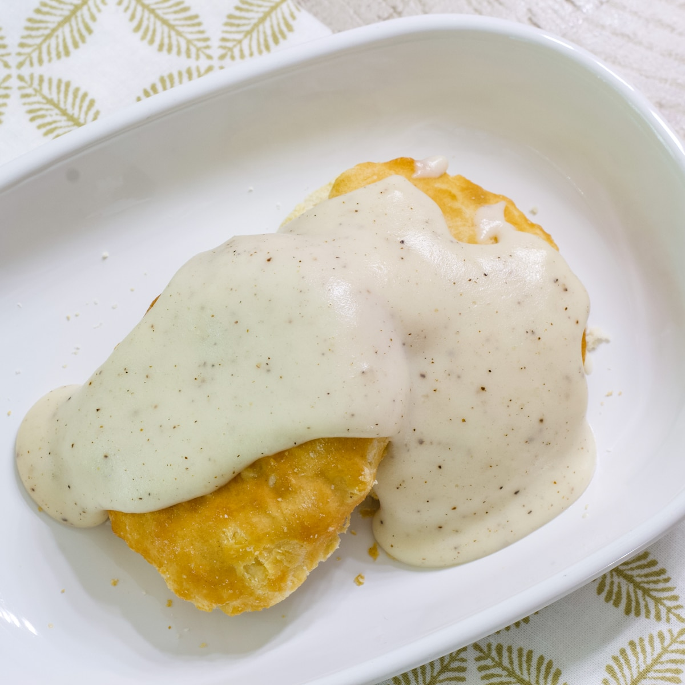

White Country Gravy

Description
This simple and delicious white gravy is a wonderful topping for biscuits, or hearty beef meals.
Ingredients
- 1/2 stick of butter
- 1/4 cup flour
- 2 cups milk (whole or 2%)
- 1/2 tsp salt
- 1/2 or 1 tbsp black pepper
Steps
- Melt the butter in a large saucepan
- Add the flour when you see small bubbles forming in the butter
- Whisk consistently until there is a toasty aroma and the mixture becomes golden (3-5 mins)
- Over time, add more and more of the milk (save about 1/4 cup)
- Add salt and pepper
- Wait until it is your desired consistency
- If not ready to serve, you can add the saved milk later to thin the gravy
Return Home